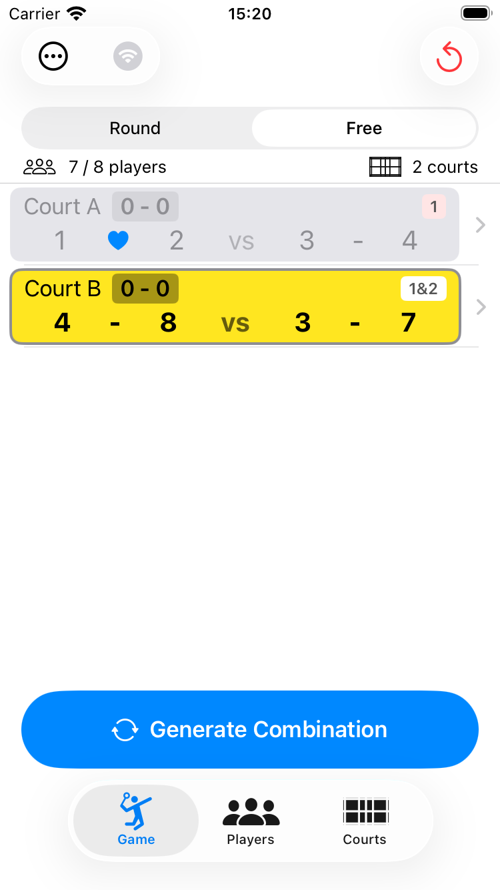
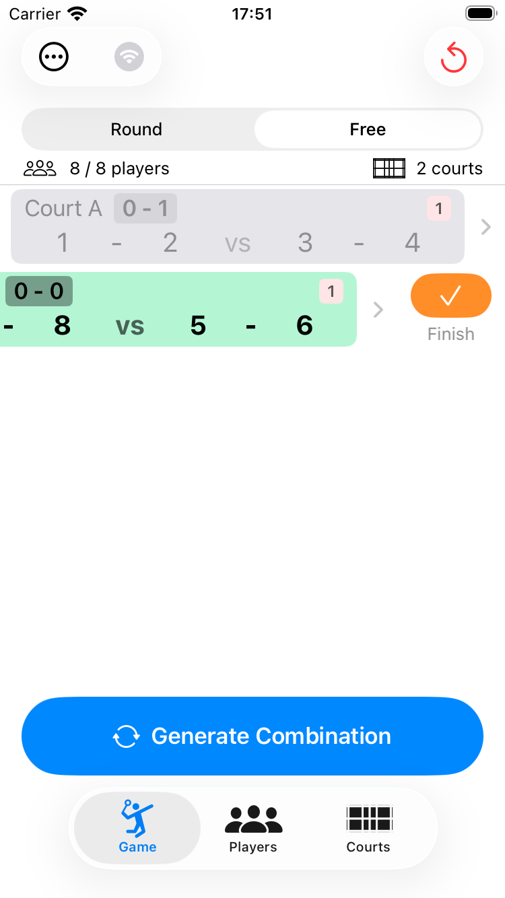
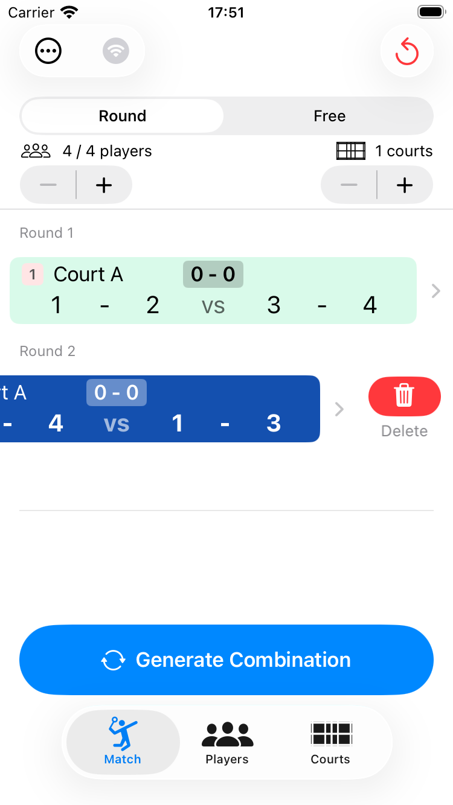
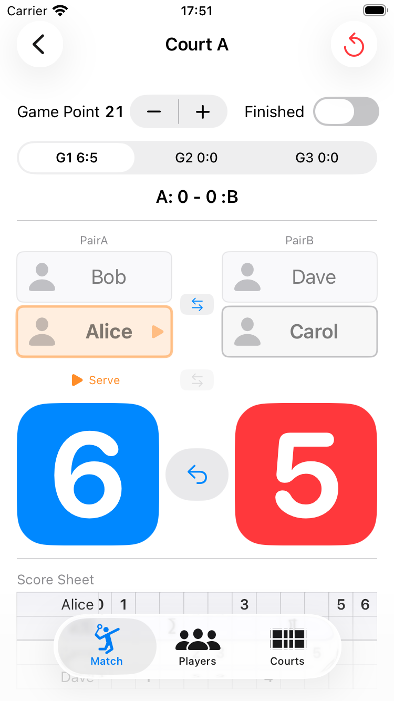
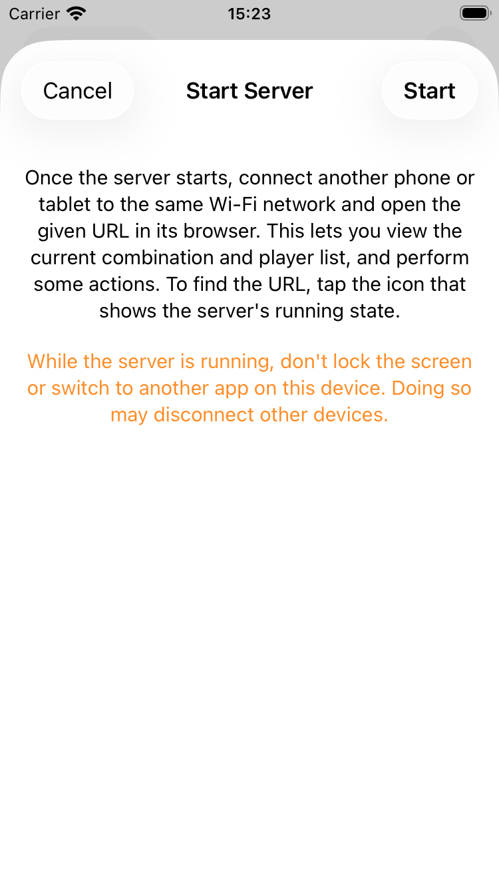
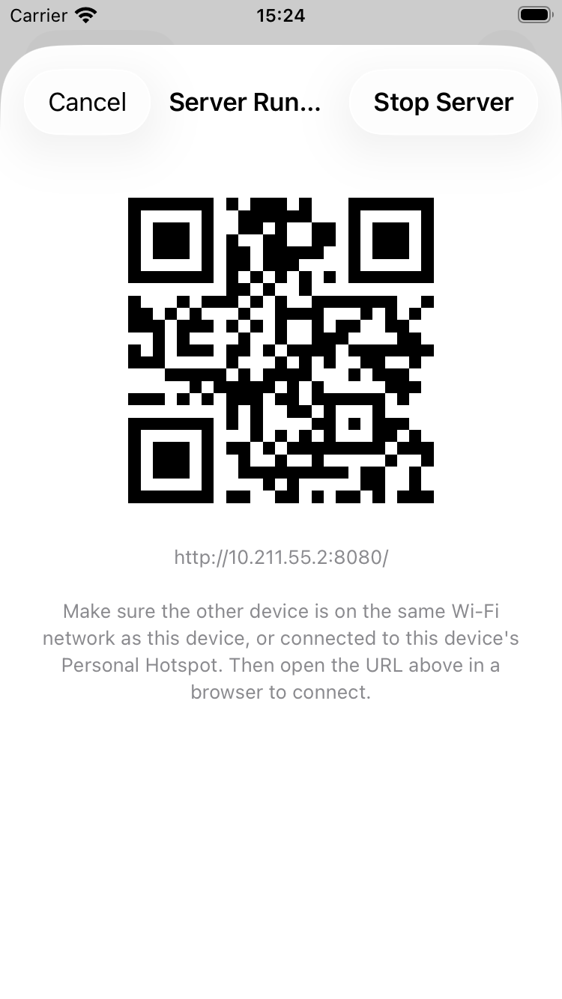
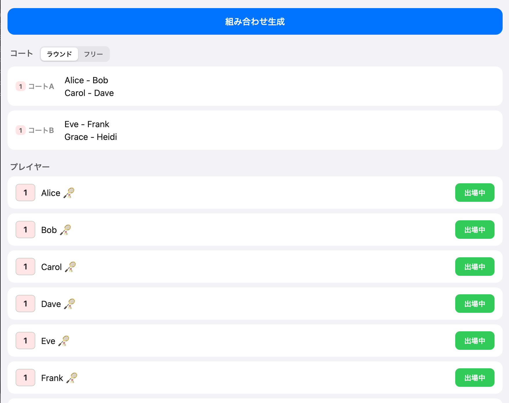

Game タブでは、組み合わせの生成、試合中のスコア記録、他の端末とのセッション共有、結果のメール送信、簡易サーバー機能を利用できます。
Game タブを開いて Generate Combination（組み合わせ生成）ボタンをタップすると、次のラウンドの組み合わせが生成されます。プレイヤーが各コートに自動で割り当てられ、重複が少なくなるよう自動的に調整されます。
ボタンをタップするたびに次のラウンドが追加されていきます。
Game タブ上部のモードセレクターで Free（フリー）を選ぶと、フリーモードに切り替わります。
フリーモードでは、コートごとに試合の終了・再開を個別に管理できます。空いたコートだけに次の組み合わせが生成されるため、試合時間がバラバラでも効率よく進行できます。
Generate Combination（組み合わせ生成）で空きコートのみ次の組み合わせが生成されます

Game タブで、最後のラウンドの行を左にスワイプすると削除できます。プレイヤーの出場回数なども元の状態に戻ります。

Game タブ右上の ↩（リセット）ボタンをタップすると、確認アラート「Delete Match Info」（ゲーム情報を削除）が表示されます。Delete（削除）を選ぶと、これまでの試合結果がすべて削除されます（プレイヤー自体は削除されません）。
Game タブのゲーム行をタップすると、スコア入力画面が開きます。画面は上から順に、Finished（終了）トグル、そのコートで何ゲーム目かを切り替える G1 / G2 / G3 ピッカーとここまでの勝ちゲーム数（A: 0 - 0 :B）、プレイヤー表示、End / Serve ボタン、得点ボタンという構成です。勝ちゲーム数とゲームピッカーのスコアは、常に PairA:PairB の順で固定表示され、後述のエンドチェンジを行っても入れ替わりません。
プレイヤー表示には、それぞれ PairA / PairB（内部の pairA・pairB に対応）のラベルが付きます。こちらはエンドチェンジで実際の左右位置が入れ替わると、表示も一緒に切り替わります。

画面下部の青（PairA）・赤（PairB）の大きなボタンに、それぞれの現在の得点が数字で表示されています。このボタンをタップすると、そのペアに1点が加算されます。ボタンは画面左右の位置に固定されており、後述のエンドチェンジでペアが入れ替わると、表示される数字（担当するペア）もそれに合わせて切り替わります。
得点に合わせてサーブ権が自動で切り替わり、サーブ権を持つプレイヤーが青色で表示されます。ボタンの真上には、サーブ権を持つ側に「Serve」の表示が出ます。
↩（取り消し）ボタンで直前の得点を1点ずつ取り消せます。
画面上部のセグメントピッカー（G1 / G2 / G3）で第1ゲーム・第2ゲーム・第3ゲームを切り替えます。ここに表示されるスコアも PairA:PairB の順で固定表示されます。
Finished（終了）トグルをオンにするとそのゲームが終了扱いになり、画面上部の勝ちゲーム数（A: 0 - 0 :B）に反映されます。
End（エンド）ボタンをタップすると、左右のペアが入れ替わります（エンドチェンジ）。PairA / PairB のラベルや得点ボタンの表示も、実際にどちらの位置にいるかに合わせて自動的に入れ替わります。スコア履歴のドットも自動で反転します。
ゲーム開始前（まだ得点が入っていない状態）に限り、Serve（サーブ）ボタンでサービス権チームを入れ替えられます。また、プレイヤー名をタップすると、同ペア内でサーバーとレシーバーを入れ替えられます。
画面右上の ↩ アイコンから、そのゲームのスコアをリセットできます。
Game タブ左上の「⋯」から、以下の機能を利用できます。
前半は複数レベルを一緒に回してから、後半はコートごとにレベル分けして各コートで個別に進行したい場合、前半の組み合わせ情報を維持したまま AirDrop で他の iPhone にセッションを共有し、後半はコートごとに別々の端末で進行を分担できます。また、複数の運営者がそれぞれ別々にプレイヤーを登録した状態で合流したい場合にも、現在のプレイヤーリストと組み合わせ結果を共有できます。
Game タブ左上の「⋯」→ Mail Results（結果をメールする）をタップすると、メール作成画面が開き、これまでの組み合わせとスコアがあらかじめ本文に入力された状態で送信できます。
PairGen を入れた端末（マスター）でサーバーを起動すると、同じ Wi-Fi に接続した他の携帯・タブレットの Web ブラウザから、現在の組み合わせやプレイヤー一覧を見たり、一部の操作を行ったりできます。大会運営スタッフなど、複数人でコート状況を共有したい場合に便利です。普段のゲーム練などでもマスターの端末以外の複数端末から OS に関係なく現在の状況や進行を操作することが可能です。またゲーム練の途中からフリーモードに切り替えてコートごとにレベルを割り振って個別に進行を操作することも可能です。
Game（ゲーム）タブ左上の Wi-Fi アイコン（または「…」メニューの「Start Server」＝サーバーを起動）をタップします。案内画面が表示されるので、内容を確認して「スタート」をタップすると起動します。

接続する端末を、マスター端末と同じ Wi-Fi に接続してください。サーバー起動中に Wi-Fi アイコンをタップすると、接続用の URL と QR コードが表示されます。QR コードを読み取るか、URL を直接ブラウザで開いてください。


再度 Wi-Fi アイコンをタップすると、稼働状況の確認画面が開きます。「Stop Server」（サーバーを停止）をタップすると停止します。